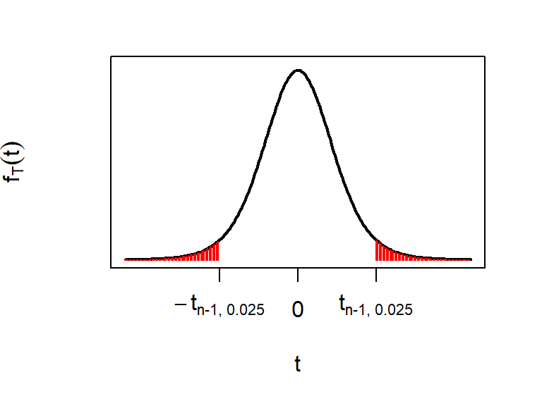

Chapter 5 Interval estimates and confidence intervals
In the last chapter we learnt how to obtain point estimates for parameters in probability distributions. The problem with point estimates is that they will almost certainly be wrong! Sample means will almost always differ from population means, for example.
Definition 5.1 (Interval estimate) We use the term “interval estimate” to mean a range of values that we think are plausible for some unknown parameter. For example, instead of reporting a point estimate: “we estimate \(\mu\) to be 11.5”, we might report an interval estimate: “we think \(\mu\) is between 9.5 and 13.5”.
By providing an interval estimate, we are able to describe our uncertainty about a parameter: the more uncertain we are, the wider the interval.
In this chapter, we will study a particular type of interval estimate known as a confidence interval. First, we need a little more distribution theory
5.1 The Student \(t\) distribution
We will use the Student \(t\) distribution shortly for obtaining confidence intervals.Definition 5.2 (Student $t$ distribution) If a random variable \(Y\) has a Student \(t\) distribution (or “Student’s \(t\)” distribution or just “\(t\) distribution” for short) with \(\nu\) degrees of freedom, that is if \[ Y\sim t_{\nu}, \] then \(Y\) has the density function \[ f_{\nu}(y) = \frac{\Gamma\left(\frac{\nu+1}{2}\right)}{\Gamma\left(\frac{\nu}{2}\right)\sqrt{\pi \nu}}\left(1+\frac{y^2}{\nu}\right)^{-\frac{\nu+1}{2}}, \] for \(\infty<y<\infty\)
5.1.1 Mean and variance of the \(t\)-distribution
If \(\nu>1\) then \[ E(Y)=0, \] and if \(\nu>2\) then \[ V(Y)=\frac{\nu}{\nu-2} \] The pdf \(f_{\nu}\) is symmetric about zero. For large values of \(\nu\), it is very similar to the standard normal density \(N(0,1)\). Some \(t\)-distributions are plotted in Figure 5.1.
Figure 5.1: The \(t_3\) and \(t_{10}\) distributions, together with the standard normal distribution. A \(t\) distribution with more than 30 degrees of freedom is hard to distinguish from a standard normal distribution. Note that \(t\) distributions have heavier tails than the normal.
Theorem 5.1 (Relationship between the normal distribution, the $\chi^2$ distribution and the $t$ distribution) If \(Z\sim N(0,1)\) and \(Y\sim \chi^2_{\nu}\), then \[ T = \frac{Z}{\sqrt{Y/\nu}} \sim t_{\nu}, \] so the ratio of a standard normal variable to the square root of a \(\chi^2\) variable has a \(t\) distribution.
(We do not prove this result in this module.)
5.1.2 Notation: quantiles/percentiles of the \(t\) distribution
If \(T\) has a \(t\) distribution with \(\nu\) degrees of freedom, we define \(t_{\nu,\ \alpha}\), for \(\alpha\in(0,1)\), by \[ P(T \leq t_{\nu,\ \alpha}) = 1-\alpha, \] so \(t_{\nu,\ \alpha}\) is the \((1-\alpha)\) quantile or \(100(1-\alpha)\) percentile of the \(t_{\nu}\) distribution. For example, \(t_{10;\ 0.05}=1.812\), so 1.812 is the 95th percentile of the \(t\) distribution with 10 degrees of freedom.
Figure 5.2: The 95th percentile of the \(t_{10}\) distribution, which is 1.812 to 3 d.p. Note the convention for the term \(\alpha\) in \(t_{\nu, \alpha}\) to refer the probability to the right (the shaded area), so that the 95th percentile is denoted by \(t_{10, 0.05}\).
5.1.3 The \(t\) distribution in R.
Cumulative probabilities and quantiles/percentiles can be calculated in R. To calculate a probability, we use the pt() command. For example, to calculate \(P(T\le -1)\) for \(T\sim t_3\), we do
## [1] 0.1955011hence, for \(T\sim t_3\), we have \(P(T\le -1)=0.196\) (to 3 d.p.).
To calculate a quantile/percentile, we use the qt() command. For example, if we want the 95th percentile of the \(t_{10}\) distribution, we do
## [1] 1.812461Note that in R, we have specified the left tail probability (0.95), whereas the convention when writing quantiles is to use the right tail probability: we write \[ t_{10, 0.05} = 1.812 \mbox{ to 3 d.p.} \]
5.2 Confidence intervals for the mean and the variance of a normal distribution
Suppose we have \(n\) independent and identically distributed normal random variables \[ X_1,X_2,\ldots,X_{n}\stackrel{i.i.d}{\sim} N(\mu, \sigma^2), \] where the values of \(\mu\) and \(\sigma^2\) are unknown to us. As usual, denote the observed values of these \(n\) random variables by \(x_1,\ldots,x_n\). We now want to report interval estimates for \(\mu\) and \(\sigma^2\), given \(x_1,\ldots,x_n\). We will report 95% confidence intervals.
95% confidence interval for the mean \(\mu\): \[\begin{equation} \bar{x} \pm t_{n-1, 0.025} \sqrt{\frac{s^2}{n}}, \tag{5.1} \end{equation}\]
95% confidence interval for the variance \(\sigma^2\): \[\begin{equation} \left[\frac{(n-1)s^{2}}{\chi^{2}_{n-1; 0.025}} , \frac{(n-1)s^{2}}{\chi^{2}_{n-1; 0.975}}\right],\tag{5.2} \end{equation}\] with \[\begin{align} \bar{x} &= \frac{1}{n}\sum_{i=1}^nx_i,\\ s^2& = \frac{1}{n-1}\sum_{i=1}^n(x_i - \bar{x})^2. \end{align}\]
By inspecting (5.1), we see that
we’d expect the confidence interval for \(\mu\) to get narrower as the sample size \(n\) increases. The more data we have, the less uncertain we should be.
a larger \(s^2\) will make the confidence interval wider. A larger \(s^2\) means there is more variability in the data, which makes it harder to get a good estimate of the mean \(\mu\).
Although less obvious from (5.2), increasing the sample size should also reduce the width of the interval.
Example 5.1 (Confidence intervals for the mean and variance of a normal distribution: Netflix stock prices)
In this example, we will work with some financial data. First, some background. Netflix was one of the best performing stocks in 2018. We will compare it with one other stock: GlaxoSmithKline (GSK). Figure 5.3 (left plot) shows end of day share prices for Netflix and GSK, for each trading day in 2018.
Figure 5.3: Left plot: daily share prices for Netflix and GSK Right plot: daily returns (daily change in share price as a proportion of the price the price at the start of the day). The returns give the profit/loss one would make from one day to the next, and look similar for the two stocks.
For investing, it’s not so much the actual price that matters, rather, it’s the return on the investment that counts. If we define \(S_i\) to be the Netflix share price at the end of day \(i\), we define the \(i\)th daily return for a Netflix share as \[ X_i = \frac{S_i - S_{i-1}}{S_{i-1}} \] (e.g., \(\$1000\) invested on day \(i-1\) will have grown to \(\$(1+X_i)1000\) by the end of day \(i\).) Daily returns are shown in the right plot. We have 249 daily returns, and we suppose \[ X_1,\ldots,X_{249}\stackrel{i.i.d}{\sim}N(\mu, \sigma^2). \] We interpret \(\mu\) as a population mean return. This describes one aspect of the stock’s performance: what the expected return would be on any given day: if \(\mu\) turned out to be negative, we would actually expect the stock to decline in value over the long term. The parameter \(\sigma\) is referred to as the volatility of the return. Investors care about the volatility as well as the mean return, because it can describe how risky investing in the stock would be.
We’ll now state the problem in general terms, without the finance jargon. We have some random variables \[ X_1,\ldots,X_{249}\stackrel{i.i.d}{\sim}N(\mu, \sigma^2). \] Given the corresponding observed values \(x_1,\ldots,x_{249}\), we want to compute 95% confidence intervals for \(\mu\) and \(\sigma^2\).
The observed values \(x_1,\ldots,x_{249}\) are stored in R in the vector netflix. The first three observations are
## [1] 0.020 0.003 0.021so we have \(x_1= 0.02, x_2= 0.003, x_3=0.021\) and so on.
Task: using the following R output, compute 95% confidence intervals for \(\mu\) and \(\sigma\).
## [1] 0.0014257 0.0008466## [1] 1.97## [1] 206.3 293.5Solution
First, we consider the R output for the \(t\) and \(\chi^2\) distributions. We have
which means that \(t_{248,\, 0.025} = 1.97\) (to 3 d.p.): the 97.5th percentile of the \(t_{248}\) distribution is 1.97 (very similar to the normal distribution). This is displayed below: the red shaded region indicates a 2.5% probability of exceeding 1.97.
We also have
which means that \(\chi^2_{248,\, 0.975} = 206.3\) and \(\chi^2_{248,\, 0.025} = 293.5\) (to 1 d.p.): the 2.5th and 97.5th percentiles of the \(\chi^2_{248}\) distribution are 206.3 and 293.5 respectively. These are displayed below: each red shaded region indicates a 2.5% probability, so the probability of lying outside the range (206.3, 293.5) is 5%.
Now, the 95% confidence interval for \(\mu\) is
\[
\bar{x}\pm t_{248,\,0.025}\sqrt{\frac{s^2}{249}}.
\]
We have (from the mean(netflix) R output)
\[\bar{x} = \frac{1}{249}\sum_{i=1}^{249}x_i = 0.001426\]
and (from the var(netflix) R output)
\[
s^2 = \frac{1}{248}\sum_{i=1}^{249}(x_i - \bar{x})^2 =0.0008466.
\]
so, substituting in the values for \(\bar{x}, s^2\) and \(t_{248,\,0.025}\), we compute the 95% confidence interval to be \[(-0.002, 0.005).\]
For the population variance \(\sigma^2\), the 95% confidence interval is \[ \left(\frac{248s^2}{\chi^2_{248,\,0.025}}, \frac{248s^2}{\chi^2_{248,\,0.975}}\right), \] and substituting in the values we get (0.0007149, 0.0010172). We can take the square root to get a CI for the standard deviation: (0.027, 0.032).
To help understand how we might use these results see Figure 5.4, where compare the returns for the Netflix and GSK stocks. (Calculations for the GSK stocks confidence intervals are not given here, but are included in the tutorial booklet as an exercise.)
![The left plot shows 95% confidence intervals for the standard deviations (volatilities). Here, we can be confident that the Netflix returns have a higher population standard deviation: investing in Netflix looks to be more risky. The right shows 95% confidence intervals for the mean returns for Netflix and GSK stocks. As a consequence of the higher standard deviation for Netflix, we are more uncertain about the population mean return compared with GSK, even though the sample sizes were the same. The Netflix population mean return could be much higher, but it could actually be lower than GSK’s; this another way in which we can see the higher risk with Netflix.](MPS114-Data-Science_files/figure-html/CIplots-1.png)
Figure 5.4: The left plot shows 95% confidence intervals for the standard deviations (volatilities). Here, we can be confident that the Netflix returns have a higher population standard deviation: investing in Netflix looks to be more risky. The right shows 95% confidence intervals for the mean returns for Netflix and GSK stocks. As a consequence of the higher standard deviation for Netflix, we are more uncertain about the population mean return compared with GSK, even though the sample sizes were the same. The Netflix population mean return could be much higher, but it could actually be lower than GSK’s; this another way in which we can see the higher risk with Netflix.
We’ll now justify these choices of interval estimates using the following result.
Theorem 5.2 (Property of a confidence interval) Before we get the data, a 95% confidence interval has a 95% chance of containing the true value of the parameter.
Proof
We have \[ X_1,X_2,\ldots,X_{n}\stackrel{i.i.d}{\sim} N(\mu, \sigma^2), \] and we consider the two random variables \[\begin{align} \bar{X} &= \frac{1}{n}\sum_{i=1}^nX_i,\\ S^2 &= \frac{1}{n-1}\sum_{i=1}^n(X_i-\bar{X}^2). \end{align}\] (Recall that \(\bar{X}\) and \(S^2\) are random, because they are functions of the random variables \(X_1,\ldots,X_n\)). We define \[ T = \frac{\bar{X} - \mu}{\sqrt{S^2/n}}. \] We first show that \(T\sim t_{n-1}\), i.e the function \(T\) has the Student-\(t\) distribution with \(n-1\) degrees of freedom. We write \[ T = \frac{\bar{X} - \mu}{\sqrt{\frac{\sigma^2}{n}}\sqrt{\frac{S^2}{\sigma^2}\times\frac{n-1}{n-1}}}, \] (where we can see that the \(\sigma^2\) and \((n-1)\) terms cancel out, leaving us with the first expression for \(T\) above.) We can now write \[ T = \frac{Z}{\sqrt{Y/(n-1)}}, \] where \[ Z = \frac{\bar{X} - \mu}{\sqrt{\sigma^2/n}}\sim N(0,1), \] which follows from equation (4.3), and \[ Y = \frac{S^2(n-1)}{\sigma^2}\sim \chi^2_{n-1}, \] which follows from equation (4.4). Then, applying Theorem 5.1, it follows that \(T\sim t_{n-1}\).
Now, we have \[ P(-t_{n-1,\, 0.025}\le T \le t_{n-1,\, 0.025}) = 0.95, \] which we visualise below.  Now we substitute in for \(T\): \[\begin{align} &P\left(-t_{n-1,\, 0.025}\le \frac{\bar{X} - \mu}{\sqrt{\frac{S^2}{n}}} \le t_{n-1,\, 0.025}\right) \\ &= 0.95. \end{align}\] Multiplying the inequality through by -1 we have \[\begin{align} P\left(t_{n-1,\, 0.025}\ge \frac{\mu - \bar{X}}{\sqrt{\frac{S^2}{n}}} \ge -t_{n-1,\, 0.025}\right) = 0.95, \end{align}\] and then we can rearrange the inequalities (multiply by \(\sqrt{\frac{S^2}{n}}\), then add \(\bar{X}\)) to get \[\begin{align} &P\left(\bar{X} + t_{n-1,\, 0.025}\sqrt{\frac{S^2}{n}}\ge \mu\right.\\ &\left.\ge \bar{X}-t_{n-1,\, 0.025}\sqrt{\frac{S^2}{n}}\right)\\ &= 0.95, \end{align}\] Hence before we get the data, there is a 95% chance that the interval \[ \left[\bar{X} - t_{n-1,\, 0.025}\sqrt{\frac{S^2}{n}},\, \bar{X} + t_{n-1,\, 0.025}\sqrt{\frac{S^2}{n}}\right] \] will contain \(\mu\). This is the justification for using (5.1) as our interval estimate for \(\mu\): the probability that this approach will result in an interval that contains \(\mu\) is high: 0.95.
We will illustrate this with the following simulation experiment. Using R, we will generate a sample of size 10 from a normal distribution with known parameters. We can then calculate the confidence interval for the mean, and see if it contains the true value or not. We will first do this once, using the \(N(30, 25)\) distribution:
## [1] 25.19 28.54 31.29 24.24 30.98 30.15 30.43 35.58 23.91 36.34## [1] 26.57## [1] 32.76This gave a 95% confidence interval of (26.57, 32.76), which does contain the true value (30) in this instance. Now we’ll repeat this 100 times, each time obtaining different random samples of size 10 from the \(N(30, 25)\) distribution and each time calculating the confidence interval. The 100 confidence intervals are shown as horizontal lines in Figure 5.5.
Figure 5.5: 95 % confidence intervals from one hundred separate samples of data. Before the data are obtained, we would expect 95 out of the 100 intervals to contain the true value of the mean. After the data are obtained, we see what 94 out of the 100 intervals did actually contain the true value.
The “95%” in “95% confidence interval” refers to a probability before getting the data.
5.3 Confidence interval for the probability parameter in a binomial distribution
Suppose we have \[ X\sim Bin(n, \theta) \] Denoting the observed value of \(X\) by \(x\), an approximate 95% confidence interval for \(\theta\) is given by \[\begin{equation} p \pm z_{0.025}\sqrt{\frac{p(1-p)}{n}}, \end{equation}\] where \(p=x/n\) and \(z_{0.025}=1.96\) is the 97.5th percentile of the \(N(0,1)\) distribution (so we are using the normal distribution rather than the \(t\)-distribution here.)
Example 5.2 (Confidence interval for a binomial probability parameter: Scottish independence opinion polls)
A survey has been conducted to estimate support for an independent Scotland2. 1067 voters in Scotland were asked: “Should Scotland be an independent country?”. The responses were as follows: Yes: 43%, No: 45%, Don’t know: 10%, Refused: 3%. Assuming each respondent was selected at random from the population of eligible voters, calculate an approximate 95% confidence interval for the proportion of “Yes” voters in Scotland, ignoring the “Don’t know” and “Refused” responses. What would the CI have been, assuming the same observed proportions, but with a sample size of 100 voters?
The 95% confidence interval is \[ 0.43 \pm 1.96 \sqrt{\frac{0.43\times 0.57}{1067}}, \] which gives (40%, 46%). Had the sample size been 100, with the proportions unchanged, the 95% CI would be \[ 0.43 \pm 1.96 \sqrt{\frac{0.43\times 0.57}{100}}, \] which gives (33%, 53%). Arguably, this is too wide to be useful; in particular, the interest is going to be in whether the ‘yes’ vote exceeds 50%, and this interval spans 50%.
5.4 \(100(1-\alpha)\%\) Confidence Intervals
We can consider other levels of confidence. In general, we use the expression “\(100(1-\alpha)\%\) confidence interval”, so, for example, choosing \(\alpha = 0.01\) corresponds to a 99% confidence interval. We write the confidence intervals for the three cases we have considered as follows
- \(100(1-\alpha)\%\) confidence interval for the mean of a normal distribution
\[\begin{equation} \left[\bar{x} - \frac{s}{\sqrt{n}}t_{n-1;\alpha/2},\quad \bar{x} + \frac{s}{\sqrt{n}}t_{n-1;\alpha/2}\right], \end{equation}\]
- \(100(1-\alpha)\%\) confidence interval for the variance of a normal distribution
\[\begin{equation} \left[\frac{(n-1)s^{2}}{\chi^{2}_{n-1; \alpha/2}},\quad \frac{(n-1)s^{2}}{\chi^{2}_{n-1; 1-\alpha/2}}\right], \end{equation}\]
- \(100(1-\alpha)\%\) confidence interval for a binomial probability parameter
\[\begin{equation} p \pm z_{\alpha/2}\sqrt{\frac{p(1-p)}{n}}. \end{equation}\]
As we increase the confidence level (by decreasing \(\alpha\)), the confidence intervals will become wider. The penalty for increasing the probability (before we get the data) that the interval will contain the true value is to report an interval that is less informative.
Example 5.3 (Confidence intervals: calculating a 99\% confidence interval for a binomial probability parameter)
Calculate a 99% confidence interval for the population proportion of yes voters from the previous example. (43% yes voters from a sample of 1067), using the R output below. Only one of the three output values is relevant: you have to decide which.
## [1] 1.645 2.326 2.576Solution
We want a 99% confidence interval, so in the general notation, we have a 100(1-\(\alpha\))% interval with \(\alpha = 0.01\) The confidence interval is given by \[\begin{equation} 0.43 \pm z_{0.01/2}\sqrt{\frac{0.43(1-0.43)}{1067}}. \end{equation}\] We just need to know the value of \(z_{0.01/2} = z_{0.005}\), which is the 99.5th percentile (not the 0.5th percentile!) of the standard normal distribution. From the R output above, this value is 2.576. Just to confirm this, we have
We display this in the plot below.
Substituting in 2.576 for \(z_{0.005}\), we obtain the 99% confidence interval as (39%, 47%): slightly wider than the 95% interval, as it has to be. The price to pay for being more ‘confident’ is that we are less ‘informative’: we have to report a wider interval.
There is no point in attempting to produce a 100% confidence interval. For the mean \(\mu\) of a normal distribution, for example, we have \(t_{n-1;0} = \infty\), so the 100% confidence interval would be \((-\infty, \infty)\). That’s clearly not helpful!
See, for example, the opinion polls reported here↩︎